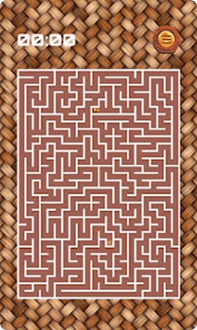

The First Turn
Look, every maze is basically the same at first - there's a path, and you just gotta pick which way to go.
You move your finger. The light follows.
At first, it's easy. One turn, then another. You see the exit almost immediately.
But then things get tricky.
The paths get longer. The turns less obvious. And suddenly, you’re not just playing — you’re thinking.
Maze Classic doesn’t rush you.
No pressure - take your time and work it out.

Simple to move. Harder to master.
There's no complicated system here.


That’s it. And yet... some mazes feel effortless, while others make you pause, retrace, and rethink everything.
It’s not about speed.
It’s about seeing what you missed the first time.
Things get interesting the further you get
You won’t notice it at first.
But with each level:
- The shapes become less predictable
- The routes become less obvious
- The decisions start to matter more
From small relaxing puzzles to complex labyrinths,
you'll find yourself really having to focus and remember the layout.
More than 100 variations —
and none of them feel exactly the same.

It’s quiet, no rush – just you figuring out the maze.
Some games try to keep you busy.
This one lets you slow down.

Play for two minutes...
or stay longer than you planned.
It’s the kind of game you open “just for a break”
and realize —
your mind is fully engaged again.
Everything you need. Nothing you don’t.
Here’s what you actually get with Maze Classic:


It’s built for everyone —
kids, adults, anyone who enjoys figuring things out.